SHIBUYA+FUNモーショングラフィック
SHIBUYA+FUN
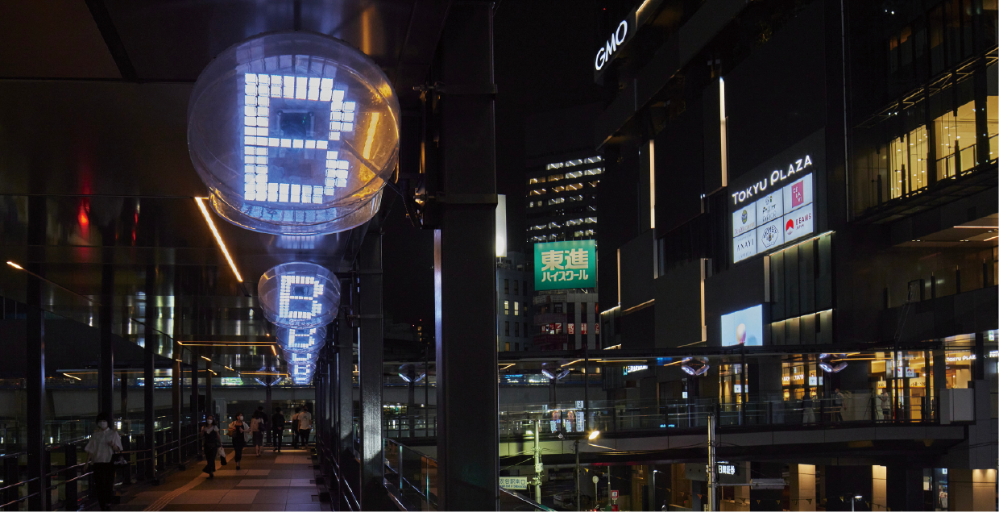
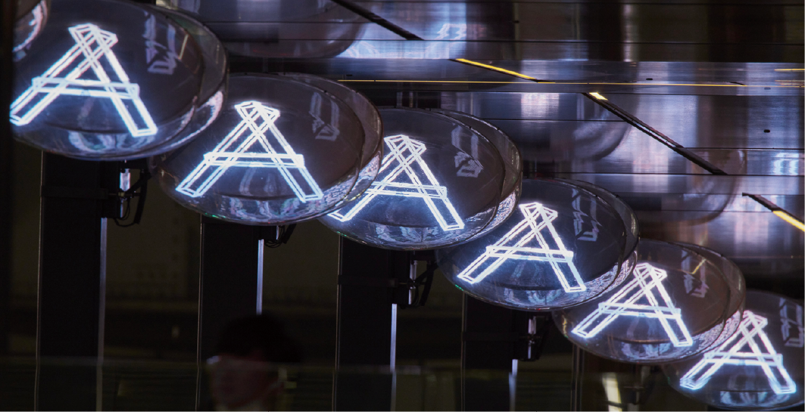
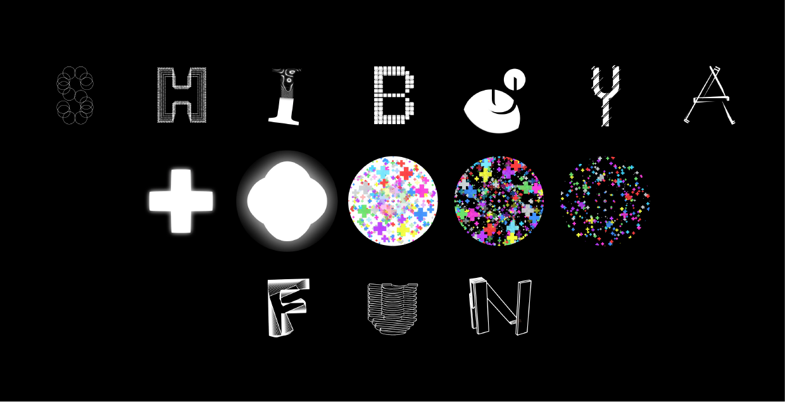
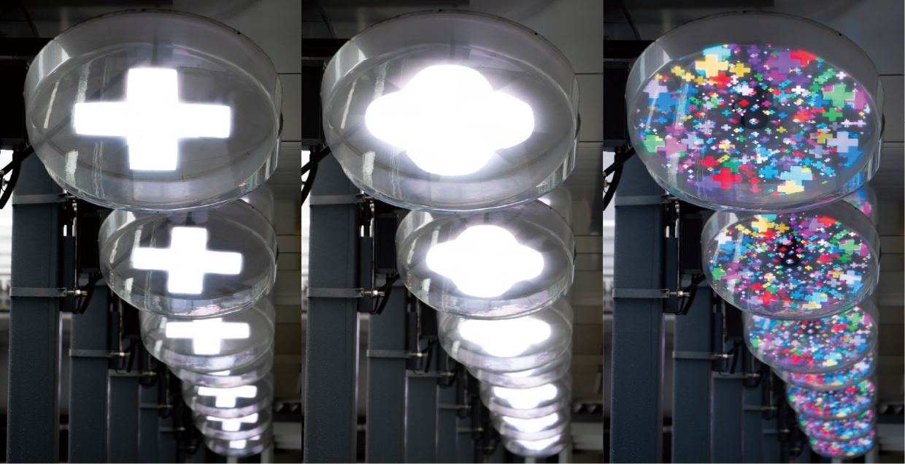
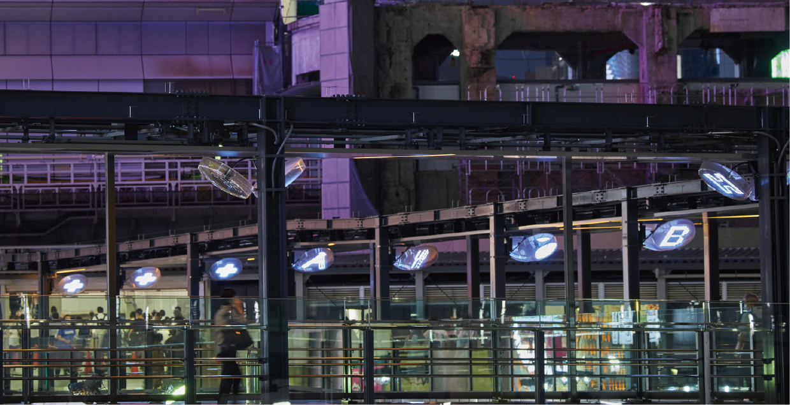
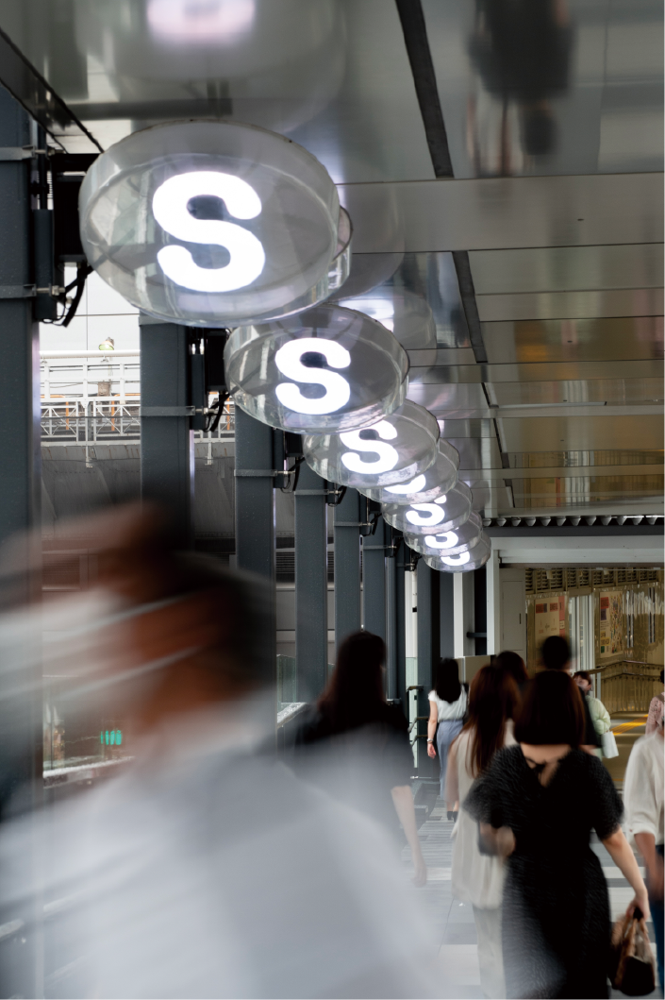
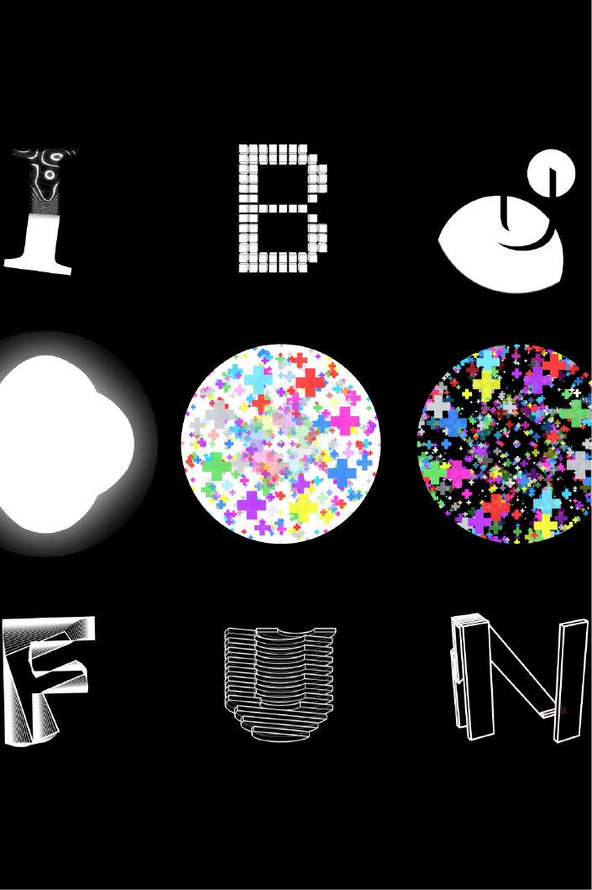
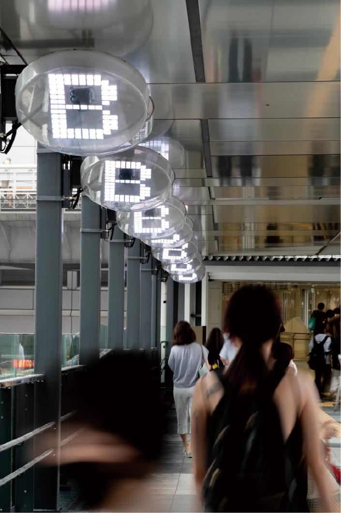
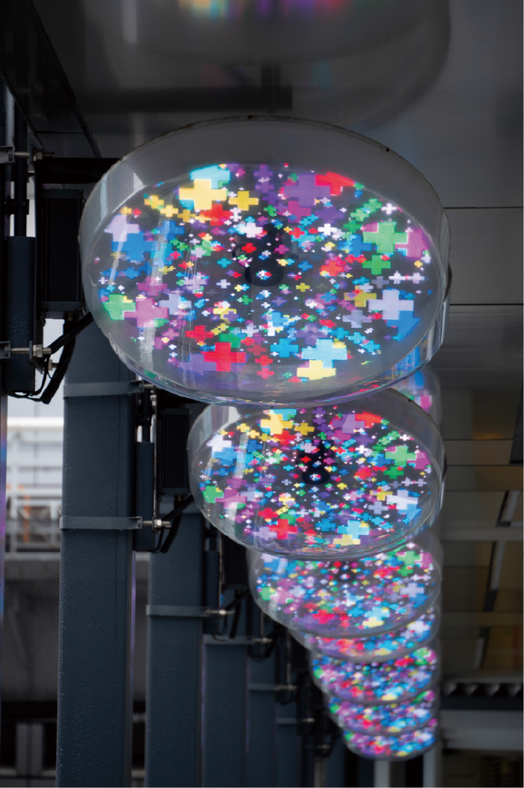
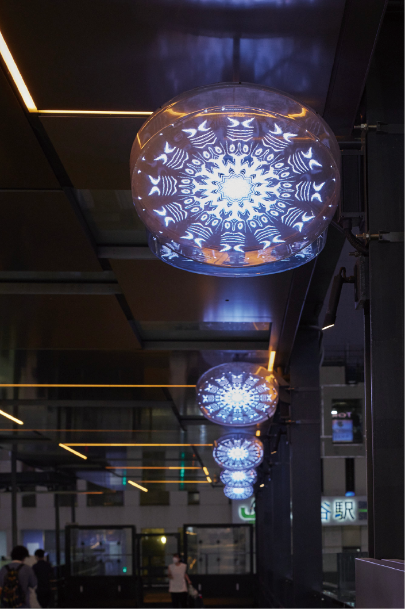
渋谷駅通路3Dファントム映像の制作
文字のモーショングラフィックの制作。
渋谷駅からフクラスへのデッキ部分位設置されている3Dファントムに放映するための「SHIBUYA＋FUN」のモーショングラフィックを制作日した。渋谷駅からフクラスへの通路は連続して12ヶ所、裏表で24台の3Dファントムが設置されている。3Dファントムは高速回転する羽根にLEDが設置され、高速で回転することでその残像で映像を流す。特徴としては浮遊感のある表現が得意である。当研究室では前年度より、3Dファントムにてアルファベットの文字を浮遊させるモーショングラフィックの表現研究を行ってきた。2021年度ゼミ展作品（JAGDA賞2022入選）等。また、このプロジェクトは渋谷駅前エリアマネジメントと東京都立大学の産学連携共同研究の一環であり、渋谷駅前エリアマネジメントは「遊び心で渋谷を動かせ」をメッセージとして活動を行っている。
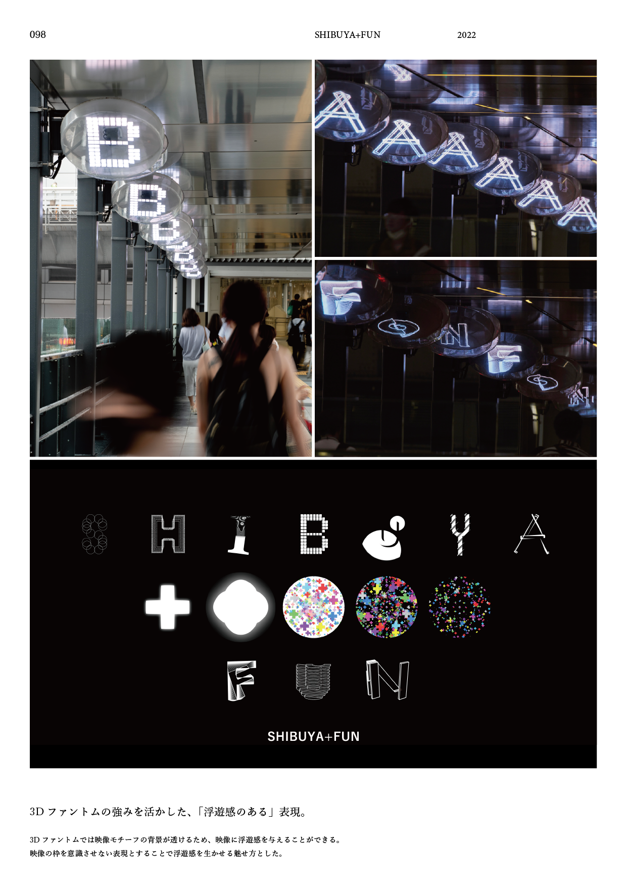
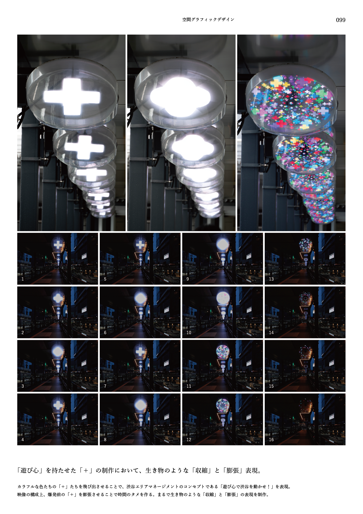
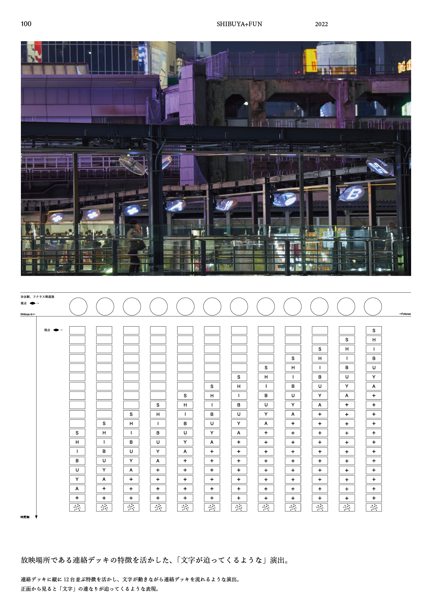
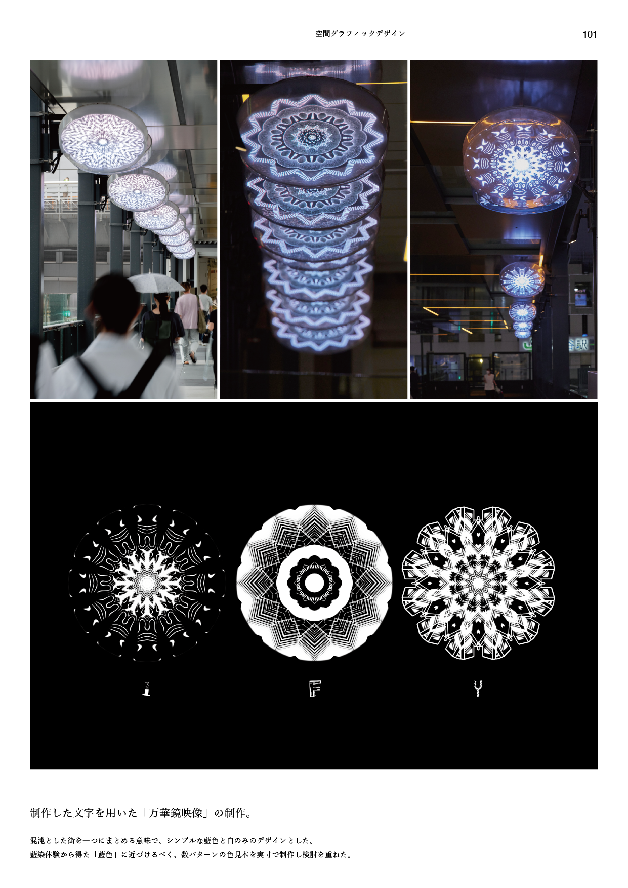
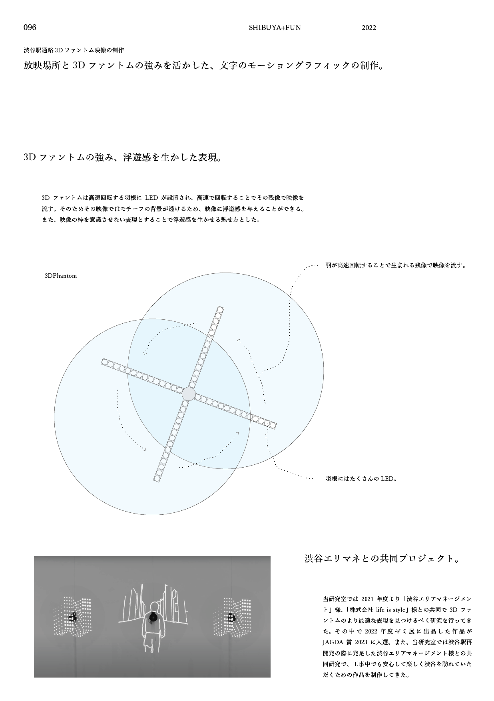
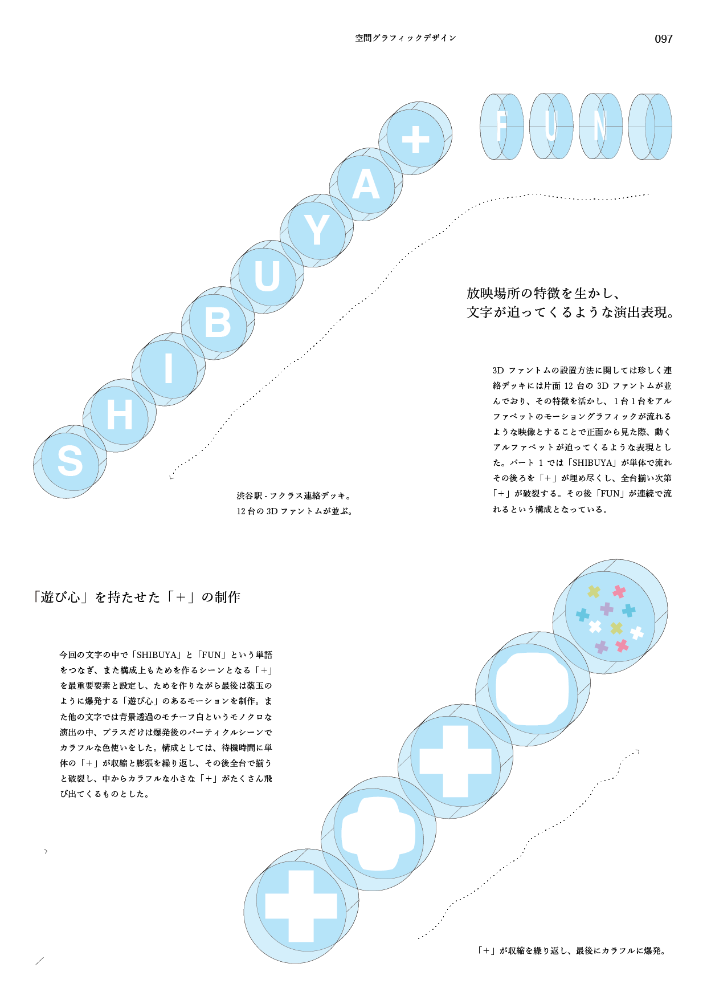